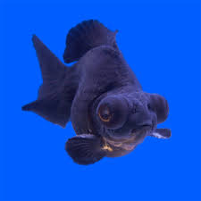
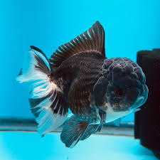
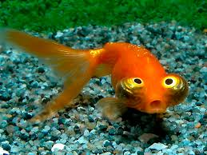
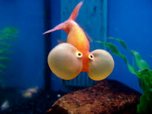

Tipos de goldfish
Pez cola de velo
El Carassius auratus, comúnmente conocido como pez dorado, bailarina o goldfish, es una especie de pez de agua dulce
perteneciente a la familia Cyprinidae. La variedad de cola de velo es reconocida por sus aletas largas y fluidas que
se asemejan a un elegante velo. Estos peces son apreciados por su belleza y tranquilidad, y son populares como mascotas en acuarios.

Cabeza de leon
El pez cabeza de león es un tipo de goldfish, proveniente de países asiáticos como China y Japón. En su natal Japón es considerado como
“el rey de los peces de colores” Es el cabeza de león pez que no se considera buen nadador, tiende a nadar inclinado ligeramente hacia
adelante, aunque hay expertos que afirman que esta postura al nadar es debido a la falta de aleta dorsal sobre el lomo, mientras otros
sostienen que es debido al peso de la cabeza y la forma de su cuerpo, más exactamente consecuencia de la ubicación de su vejiga.Los peces
cabeza de león pueden llegar a medir hasta 21 centímetros de longitud, siendo bastante grandes, aunque el promedio general de largo es de
18 centímetros, existiendo ejemplares un poco más pequeños de 15 centímetros.

Telescopio
El pez Telescopio (Carassius auratus) es una variedad popular y distintiva del pez dorado, conocido por sus ojos prominentes y su cuerpo redondeado.
Originario de China, este pez de agua fría se ha criado selectivamente para desarrollar ojos abultados que sobresalen en forma de telescopio, de ahí
su nombre. Es una especie apreciada por su apariencia única y elegante, lo que lo convierte en una opción popular para los acuarios.

Sello Rojo
Un oranda es una raza de goldfish dorada caracterizada por un capuchón en la parte de la cabeza. La capucha es un crecimiento prominente en la parte
superior de la cabeza (región craneal) que puede crecer en toda esta parte exceptuando los ojos y boca.
El capuchón toma alrededor de 1 o 2 años para desarrollarse por completo. El oranda puede crecer entre 20 a 31 centímetros (8 a 12 pulgadas) en longitud.
A veces el wen crece enormemente cubriendo los ojos de la carpa. Debido a esto, el pez puede perder la vista en parte o quedar incluso ciego. El oranda puede
tolerar temperaturas de 17-28 °C (65-80+°F). Es especialmente sensible a temperaturas frías, más que otra variedad de carpa dorada.

Celestial
El pez Ojos Celestiales, también conocido como Pez Celestial o Telescopio, es una variedad de Goldfish caracterizada por sus ojos prominentes y dirigidos hacia
arriba. Su cuerpo es redondeado y su coloración varía, pudiendo encontrarse en tonos rojos, blancos, naranjas, negros o una combinación de estos colores. Son peces
muy apreciados en la acuariofilia debido a su apariencia única y llamativa.

Ojos de burbuja
El Goldfish Ojos de Burbuja es una variedad especial del pez dorado (Carassius auratus). Se caracteriza por sus ojos prominentes y globosos, que le dan un aspecto
único y distintivo. Su cuerpo puede presentar diferentes colores y patrones, como naranja, blanco, rojo o negro. Es un pez de agua fría y muy apreciado en acuarios
por su apariencia peculiar.
NOTA: Estos peces son MUY sensibles si vas a tener uno asegurate al 100% de que se tienen las condiciones para tenerlos sino mejor no tengas ya que su mera existencia ya
es muy como para complicarla mas
